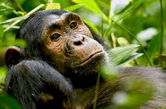

Lions are large wild cats mainly found in parts
of India and Africa.
They usually live in groups called prides.
Male lions are known for their thick manes.
Lions are carnivores, meaning they eat meat.
Tigers are the largest cat species in the world.
They are famous for their orange fur with black stripes.
Tigers usually live alone and are strong hunters.
The Bengal Tiger is commonly found in India.
Deer are herbivores, so they eat grass,
leaves, and plants.
Many male deer grow antlers.
Deer are fast runners and are often prey
for larger predators.
They are found in forests and grasslands
around the world.
Wolves are wild members of the dog family.
They usually live and hunt in groups called packs.
Wolves communicate using howls.
They are intelligent hunters and mostly eat meat.

